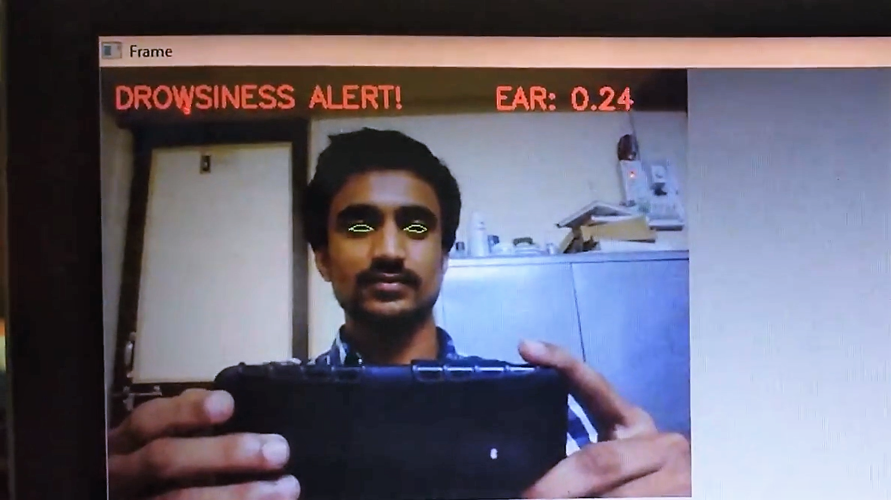

Driver Fatigue Detection using Computer Vision
Prevent car accidents that happen due to fatigue or drowsiness
 The objective of this project is to build a device that will monitor the driver’s alertness by observing his/her eyes and head movements. If the unit deduces that the driver’s eyes are drooping down due to sleepiness or his/her head is tilting in forward direction, the unit will sound an audible alarm which will alert the driver and he can take corrective action.
-
Developers
- Sushil Patil
-
Funded By
- Self Funded
India ranks among the top in the world in road accidents
and death. In 2016, India witnessed over 480,000 accidents,
resulting in over 150,000 deaths. Breaking it down further,
on average, there are 55 accidents resulting in 17 deaths
every hour.
Most accidents are due to driver error. The road conditions,
vehicle maintenance, differential between vehicle speeds,
lack of discipline by drivers and citizens all lead to high
stress levels in drivers. The stress induces sleepiness and
fatigue. With fatigue, the drivers are more prone to making
error leading to a road accident.
Our solution aims to detect stress and sleepiness of the driver.
It will monitor and alert the driver before it is too late.
This solution could immensely benefit the following entities
- State Transport Corporations
- Commercial Vehicles carrying goods
- Private Fleet Owners
- Trains
- Oil / Chemical Tankers
- Insurance Companies